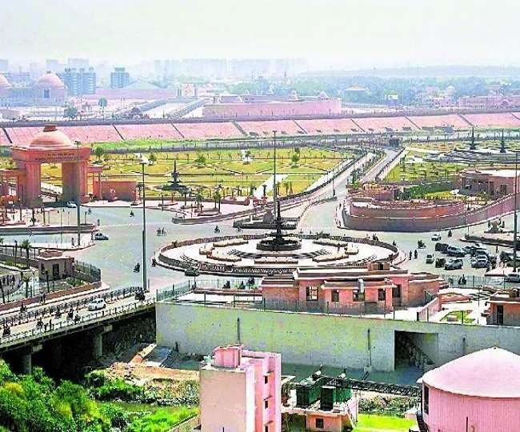
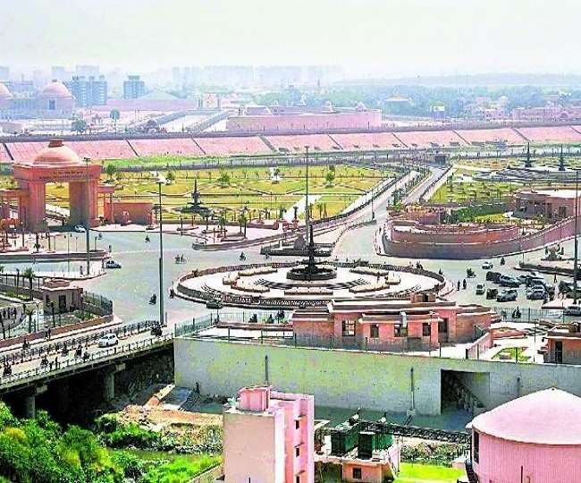

Ayodhya was historically known as Saketa. The early Buddhist and Jain canonical texts mention that the religious leaders Gautama Buddha and Mahavira visited and lived in the city. The Jain texts also describe it as the birthplace of five tirthankaras namely, Rishabhanatha, Ajitanatha, Abhinandananatha, Sumatinath and Anantnath, and associate it with the legendary Bharata Chakravarti. From the Gupta period onwards, several sources mention Ayodhya and Saketa as the name of the same city.
The legendary city of Ayodhya, popularly identified as the present-day Ayodhya, is known as the birthplace of the Hindu deity Rama of Kosala and is the setting of the great epic Ramayana and its many versions. Owing to the belief as the birthplace of Rama, Ayodhya has been regarded as the first of the seven most important pilgrimage sites for Hindus.[6] It is believed that a temple stood at the supposed birth spot of Rama, which was demolished by the orders of either the Mughal emperor Babur or Aurangzeb, and a mosque erected in its place.[8] In 1992, the dispute over the spot led to the demolition of the mosque by Hindu mobs, who aimed to rebuild a grand temple of Rama at the site.[9]
A five-judge full bench of the Supreme Court heard the title cases from August to October 2019 and ruled that the land belonged to the government per tax records, and ordered it to be handed over to a trust to build a Hindu temple. It also ordered the government to give an alternative 5 acres (2.0 ha) of land to the Uttar Pradesh Sunni Central Waqf Board to build a mosque in lieu of the demolished Babri mosque. The construction of Ram Mandir commenced in August 2020Gupta period Around the fourth century, the region came under the control of the Guptas, who revived Brahmanism.
[44] The Vayu Purana and the Brahmanda Purana attest that the early Gupta kings ruled Saketa.[20] No Gupta-era archaeological layers have been discovered in present-day Ayodhya, although a large number of Gupta coins have been discovered here. It is possible that during the Gupta period, the habitations in the city were located in the areas that have not yet been excavated.[45] The Buddhist sites that had suffered destruction during the Khotanese-Kushan invasion appear to have remained deserted.[46] The fifth-century Chinese traveller Faxian states that the ruins of Buddhist buildings existed at "Sha-chi" during his time.[47] One theory identifies Sha-chi with Saketa, although this identification is not undisputed.[48] If Sha-chi is indeed Saketa, it appears that by the fifth century, the town no longer had a flourshing Buddhist community or any important Buddhist building that was still in use.[38]An important development during the Gupta time was the recognition of Saketa as the legendary city of Ayodhya, the capital of the Ikshvaku dynasty.[44] The 436 AD Karamdanda (Karmdand) inscription, issued during the reign of Kumaragupta I, names Ayodhya as the capital of the Kosala province, and records commander Prithvisena's offerings to Brahmins from Ayodhya.[49] Later, the capital of the Gupta Empire was moved from Pataliputra to Ayodhya. Paramartha states that king Vikramaditya moved the royal court to Ayodhya; Xuanzang also corroborates this, stating that this king moved the court to the "country of Shravasti", that is, Kosala.[50] A local oral tradition of Ayodhya, first recorded in writing by Robert Montgomery Martin in 1838,[51] mentions that the city was deserted after the death of Rama's descendant Brihadbala. The city remain deserted until King Vikrama of Ujjain came searching for it, and re-established it. He cut down the forests that had covered the ancient ruins, erected the Ramgar fort, and built 360 temples.[51]
Vikramditya was a title of multiple Gupta kings, and the king who moved the capital to Ayodhya is identified as Skandagupta.[50] Bakker theorises that the move to Ayodhya may have been prompted by a flooding of the river Ganges at Pataliputra, the need to check the Huna advance from the west, and Skandagupta's desire to compare himself with Rama (whose Ikshvaku dynasty is associated with the legendary Ayodhya).[51] According to Paramaratha's Life of Vasubandhu, Vikramaditya was a patron of scholars, and awarded 300,000 pieces of gold to Vasubandhu.[52] The text states that Vasubandhu was a native of Saketa ("Sha-ki-ta"), and describes Vikramaditya as the king of Ayodhya ("A-yu-ja").[53] This wealth was used to build three monasteries in the country of A-yu-ja (Ayodhya).[52] Paramartha further states that the later king Baladitya (identified with Narasimhagupta) and his mother also awarded large sums of gold to Vasubandhu, and these funds were used to build another Buddhist temple at Ayodhya.[54] These structures may have been seen by the seventh century Chinese traveller Xuanzang, who describes a stupa and a monastery at Ayodhya